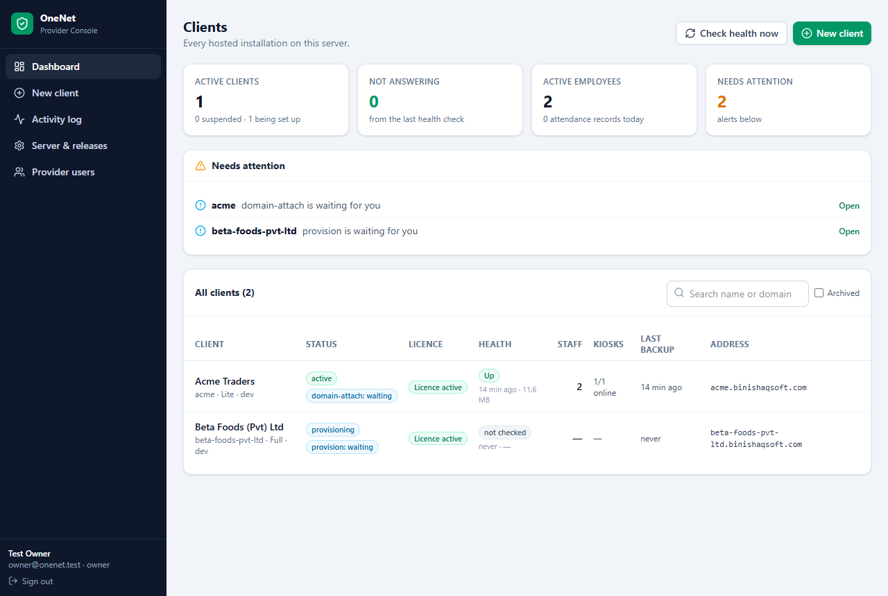
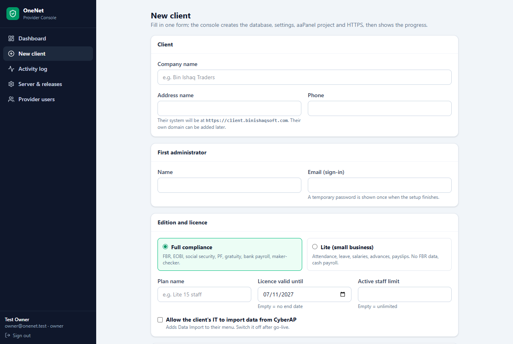
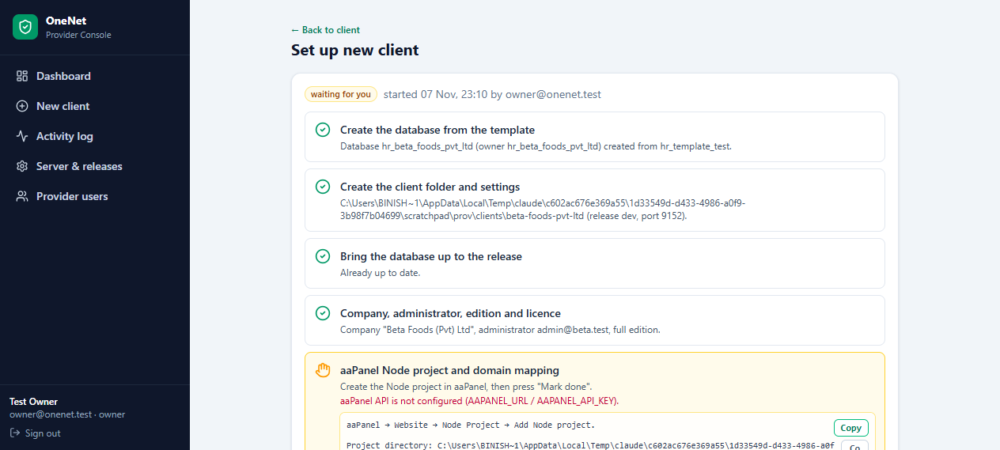
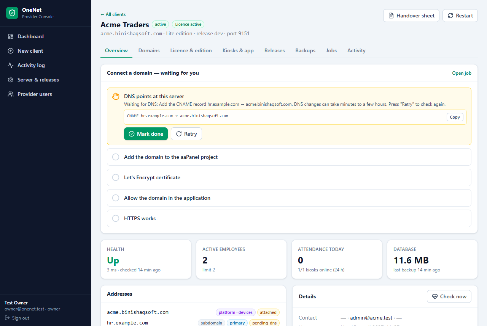
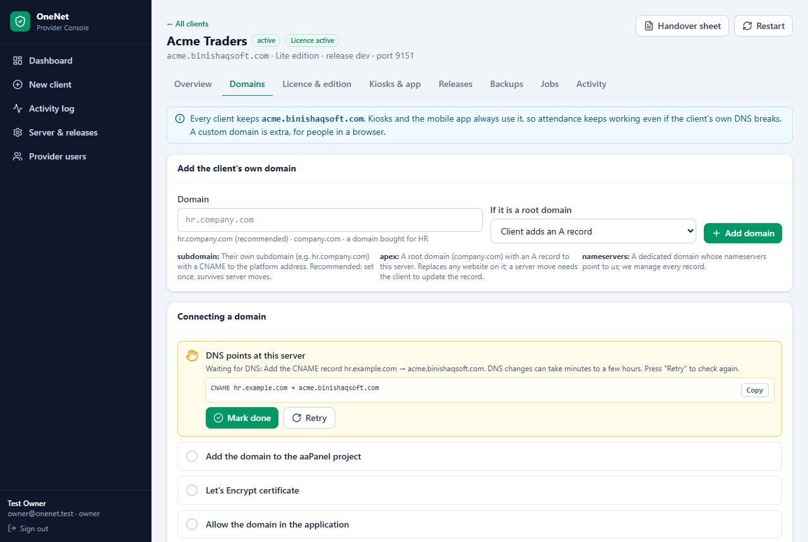
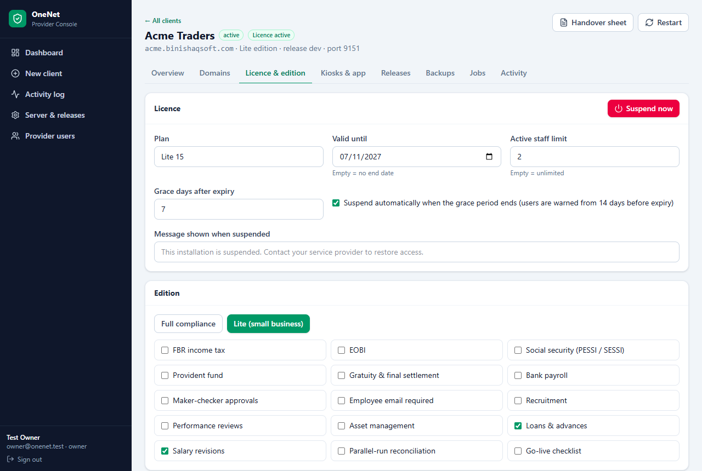
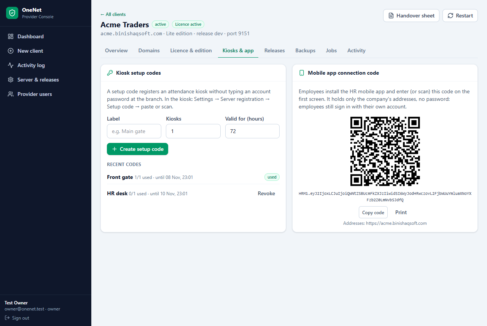
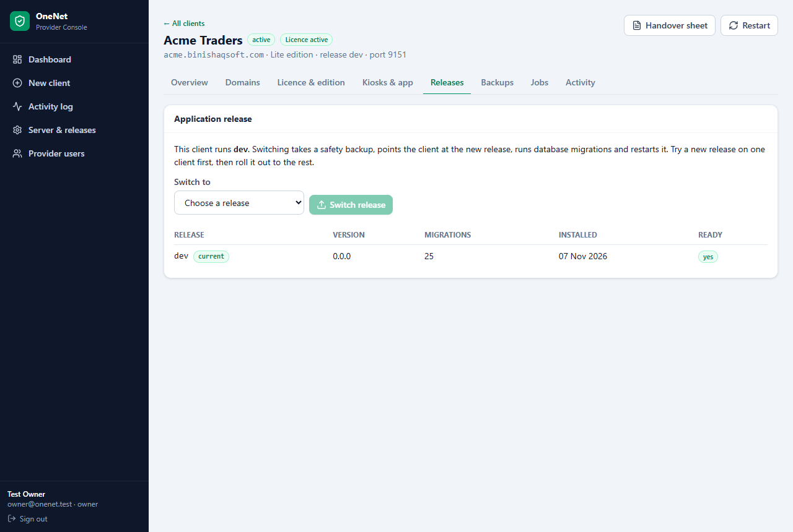
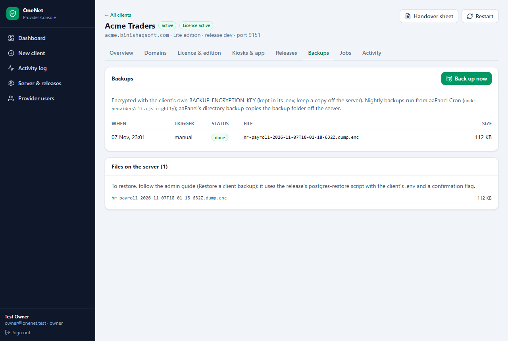

Daily work for OneNet staff: set up a new hosted client in minutes, connect any type of domain, manage licences, kiosks, the mobile app, backups and releases.
Open the console address (for example https://admin.binishaqsoft.com) and sign in with your email and password. Every account needs an authenticator app (Google Authenticator, Microsoft Authenticator or similar):
| Role | Can do |
|---|---|
| Owner | Everything, including provider users, the template database and archiving clients |
| Operator | Create clients, domains, licences, kiosk codes, backups, releases |
| Viewer | Look at everything, change nothing |

The tiles count active clients, installations that do not answer, active employees across all clients and open alerts. Needs attention lists what to do now, for example a job waiting for you, an expiring licence, a certificate or domain registration about to expire, a client that is down, or a missing nightly backup. Click a client row (or Open) to go to its page. Check health now refreshes every client immediately; it also runs automatically every 10 minutes.
Menu → New client. One form is enough; the console does the rest.

| Field | What to enter |
|---|---|
| Company name | The client's name as it appears in the app and on payslips. |
| Address name | Filled in from the name; becomes https://<name>.binishaqsoft.com. Lowercase letters, digits and dashes. It cannot be changed later, so keep it short (e.g. binishaq). |
| First administrator | Name and email of the client's main user. A temporary password is created and shown once. |
| Edition | Full compliance (FBR, EOBI, social security, PF, gratuity, bank payroll, approvals) or Lite (small shops, cash payroll, no FBR data). |
| Licence | Plan name, end date (empty = no end) and the active staff limit (empty = unlimited). |
| Data import | Tick when the client will move data from CyberAP themselves (see the Client Data Migration Guide). |
| Release | The application version to run; normally the newest. |
Press Create client. The job page opens and shows each step live:

| Step | What happens |
|---|---|
| Create the database | A copy of the template database (all tables, default roles, FBR tax slabs) with its own PostgreSQL login. Takes seconds. |
| Client folder and settings | The client's folder with its settings file, encryption keys, document and backup folders. |
| Bring the database up to the release | Any database changes newer than the template. |
| Company, administrator, edition and licence | The company record, the first administrator and the chosen settings. |
| aaPanel Node project and domain mapping | Creates the site in aaPanel. If the aaPanel API is not connected, the step shows exactly what to click and type. |
| HTTPS | Deploys the wildcard certificate to the new site. |
| Check that the installation answers | Calls the new installation and confirms it is live. |

The header shows status, licence, the platform address, edition, release and port, with Handover sheet and Restart. The tabs are explained below. Every action you take here is recorded in the activity log.
Every client always has its platform address <name>.binishaqsoft.com. It works from the first minute (wildcard DNS and certificate) and can never be removed, because kiosks and the mobile app always use it. If a client's own DNS breaks, attendance still works. A client's own domain is extra, for people opening the system in a browser.
| Type | Example | What the client does | Advice |
|---|---|---|---|
| Their subdomain | hr.company.com | One CNAME record → <name>.binishaqsoft.com | Recommended. Set once; a server move needs nothing from the client; their website and email are untouched. |
| Root domain | company.com | An A record → the server IP (or ALIAS/flattened CNAME where the DNS provider supports it), plus www | Only if nothing else is on the domain: it replaces their website. A server move needs the client to update the record. |
| Dedicated domain, nameservers to us | companyhr.com | Changes the domain's nameservers to ours, once | Best for a domain bought just for HR: we manage every record; the client cannot break it. |
| Platform only | name.binishaqsoft.com | Nothing | Default for small and Lite clients. |

Every night the console re-checks each domain: DNS still pointing here, certificate valid for at least 15 more days, and registration not expiring within 30 days. Problems appear on the dashboard.


No account password is typed at the branch. The code carries the platform address (and the client's domain as a fallback); the kiosk switches automatically if one address stops answering.
Employees install the HR app and, on its first screen, scan or type the company connection code (or the company address). The code holds only addresses; employees still sign in with their own account. Print it for the client's notice board.

Choose a release → Switch release. The job takes a safety backup, switches, runs the database changes, restarts the client and checks it answers. Try a new release on one client first; if something is wrong, switch back the same way.

Each client is backed up every night (encrypted with the client's own key). Back up now runs one at once, for example before a big change. Restoring is an Admin task (see the Admin Guide).
| I want to… | Where |
|---|---|
| Set up a new client | New client → fill in → Create client → finish manual steps → hand over the password |
| Give a client their own domain | Client → Domains → Add domain → send the DNS sheet → Retry after DNS is added |
| Register a kiosk | Client → Kiosks & app → Create setup code → paste it on the kiosk |
| Connect phones | Client → Kiosks & app → print the mobile connection code |
| Renew a licence | Client → Licence & edition → new end date → Save |
| Stop access (unpaid) | Client → Licence & edition → Suspend now |
| Let the client import CyberAP data | Client → Licence & edition → Client data import → Save |
| Upgrade a client | Client → Releases → choose → Switch release |
| Back up before a change | Client → Backups → Back up now |
| See what happened | Activity log (all) or client → Activity |